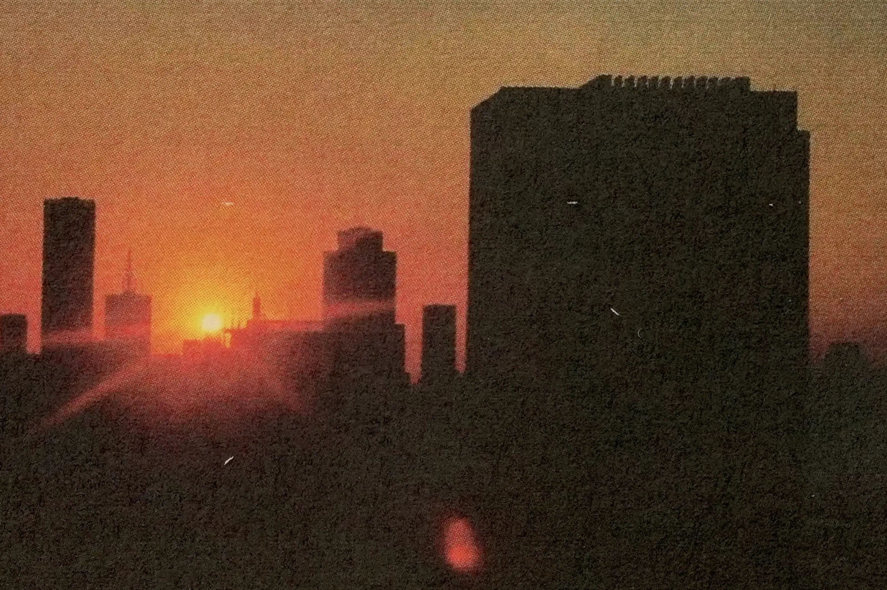
Het Financieele Dagblad
"Roze"
commercial
music
sound design
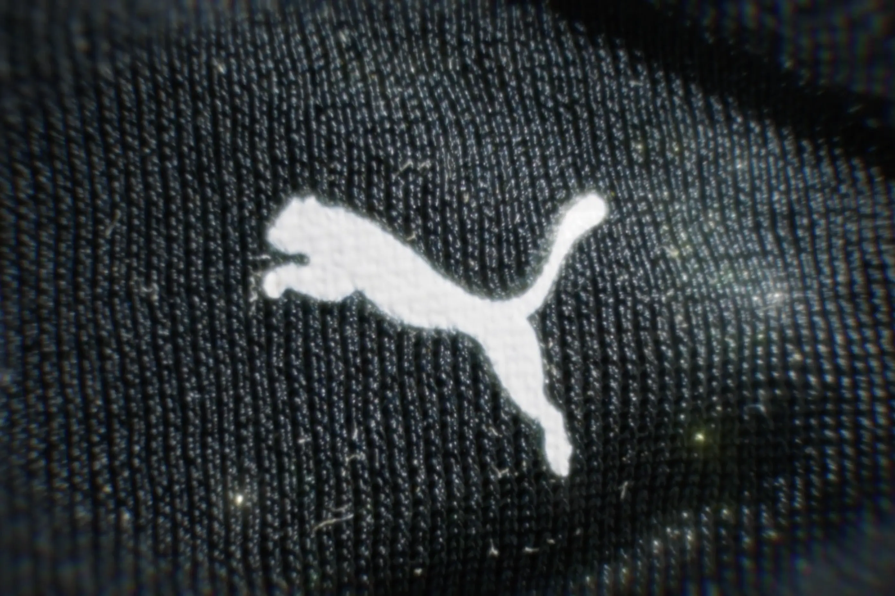
Puma
"Exotek" (Geerten Harmens DC)
commercial
music
sound design
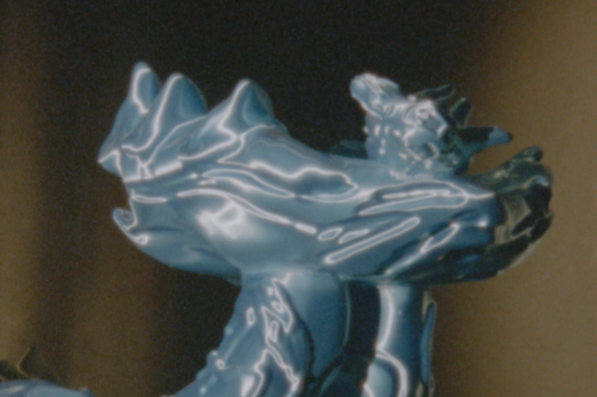
Nieuwe Instituut
"Dutch, More or Less"
commercial
music
sound design
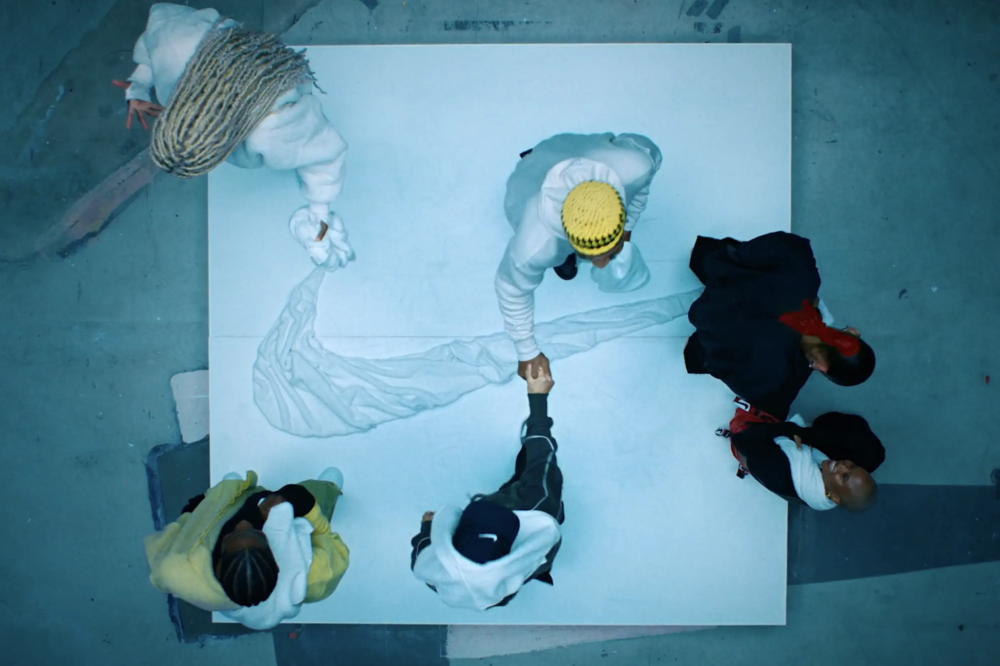
Nike
"Member Days"
commercial
music with Ian Alken & Niels den Otter
sound design with Niels den Otter
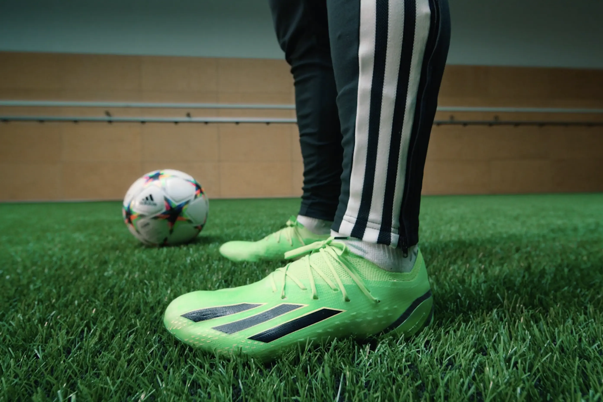
Adidas x Rick & Morty
"Speedportal FW22"
commercial
music with Amon Tobin
sound design with Niels den Otter
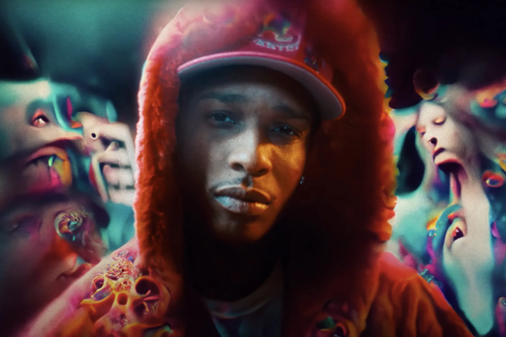
A$AP Ant & A$AP Rocky
"The God Hour"
music video
sound design with Niels den Otter
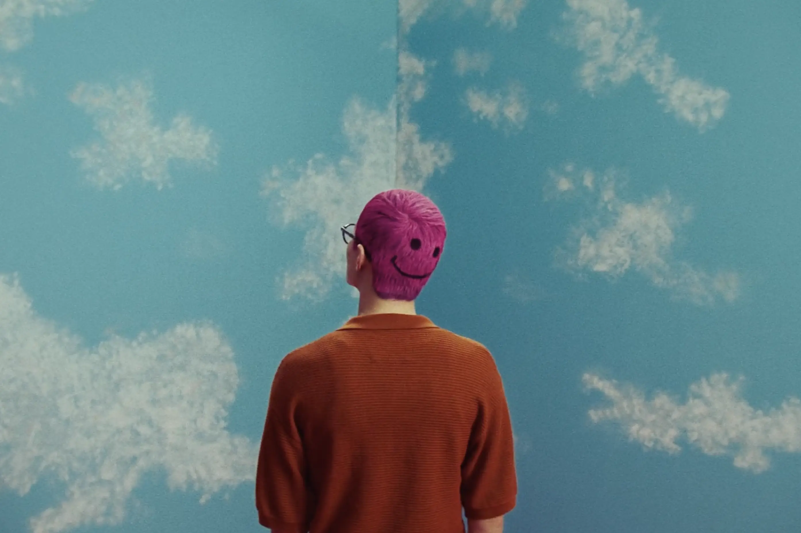
Ace & Tate
"A Frame For Every Face"
commercial
music with Sjoerd Limberger
sound design with Niels den Otter
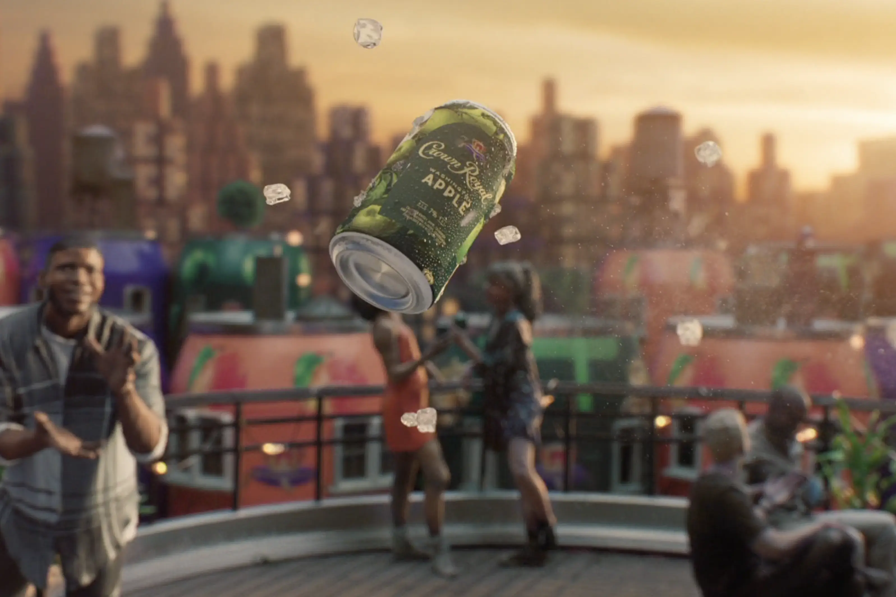
Crown Royal
"World of Cans" (Paul Geusebroek DC)
commercial
music
sound design with Niels den Otter
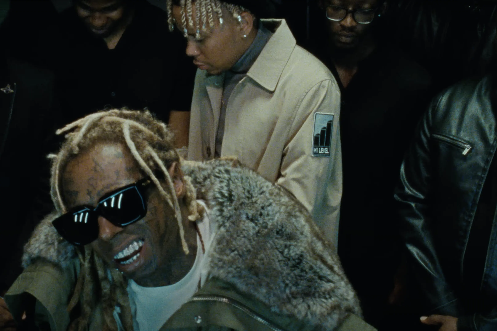
Lil Wayne & Cordae
"Sinister"
music video
sound design
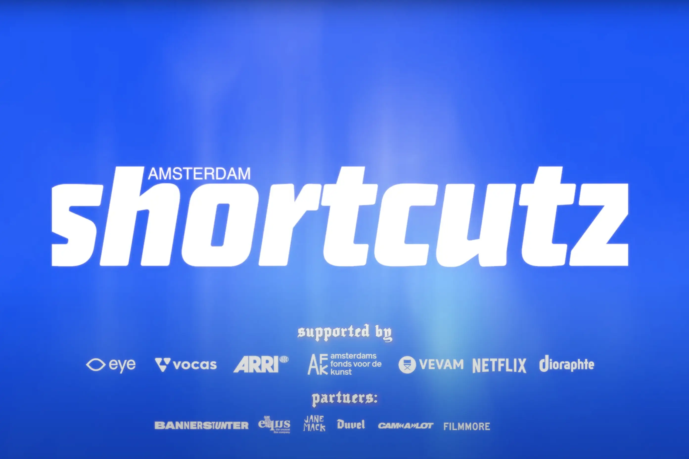
Shortcutz
"10th Annual Awards"
trailer & idents
music
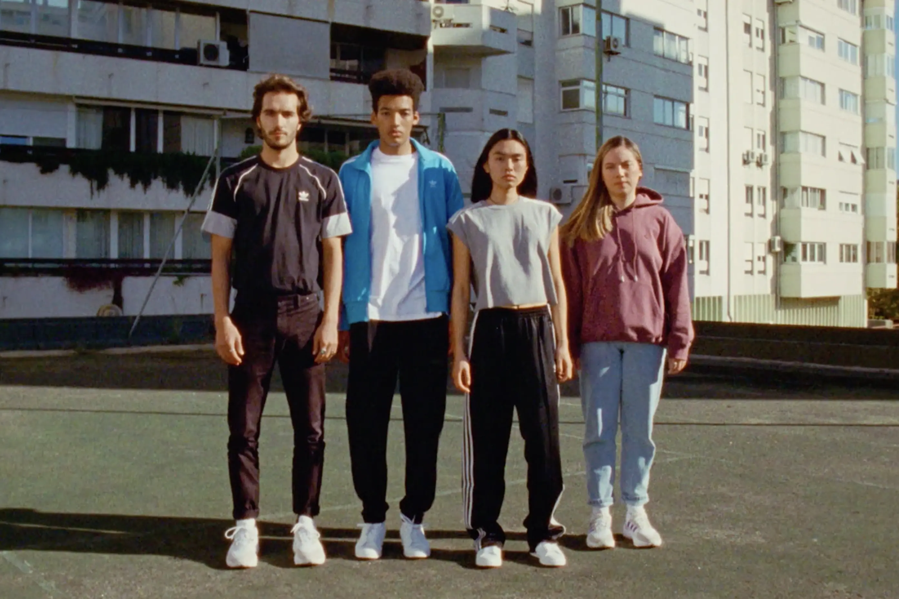
Adidas
"Comfort Is Our Sport"
commercial
music with Sjoerd Limberger, Ian Alken & Niels den Otter
sound design with Niels den Otter
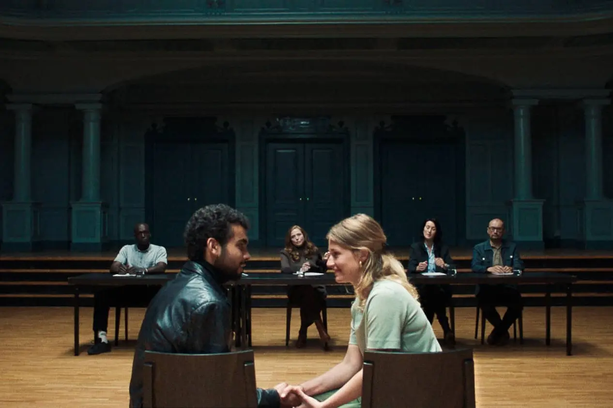
"Casting Call"
short film
music with Ian Alken & Niels den Otter
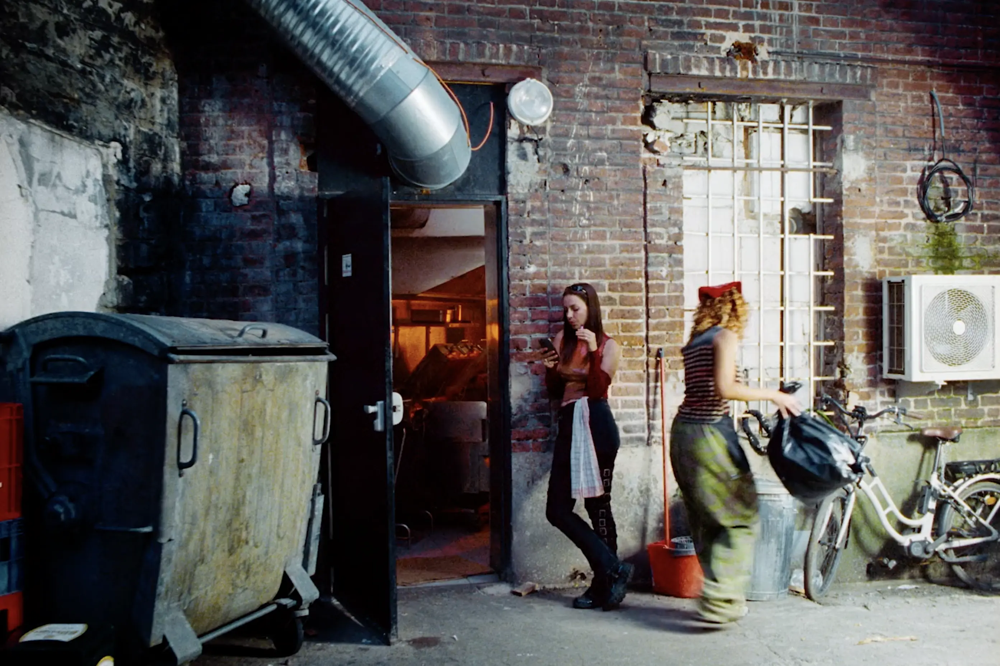
Young Capital
"Whatever Works"
commercial
sound design with Niels den Otter
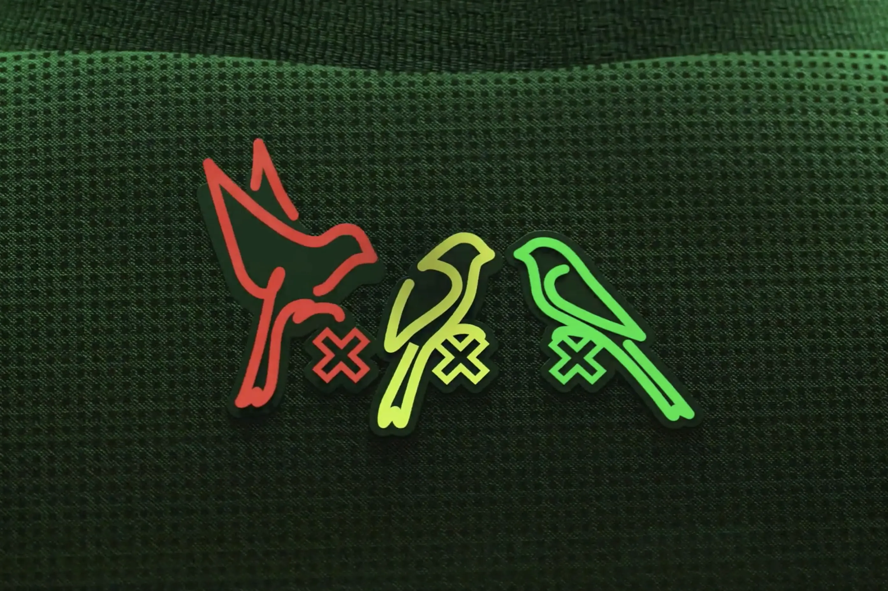
AFC Ajax
"That Makes Us Fly"
commercial
sound design with Niels den Otter
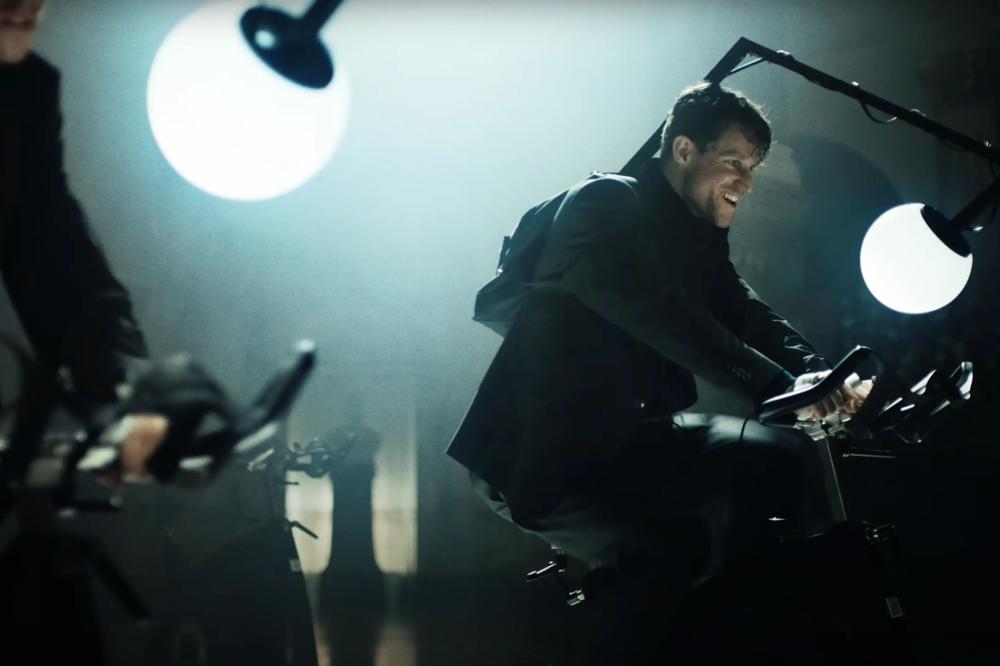
Nonchelange & Le Motat
"Ben Ik Daar?"
music video
sound design